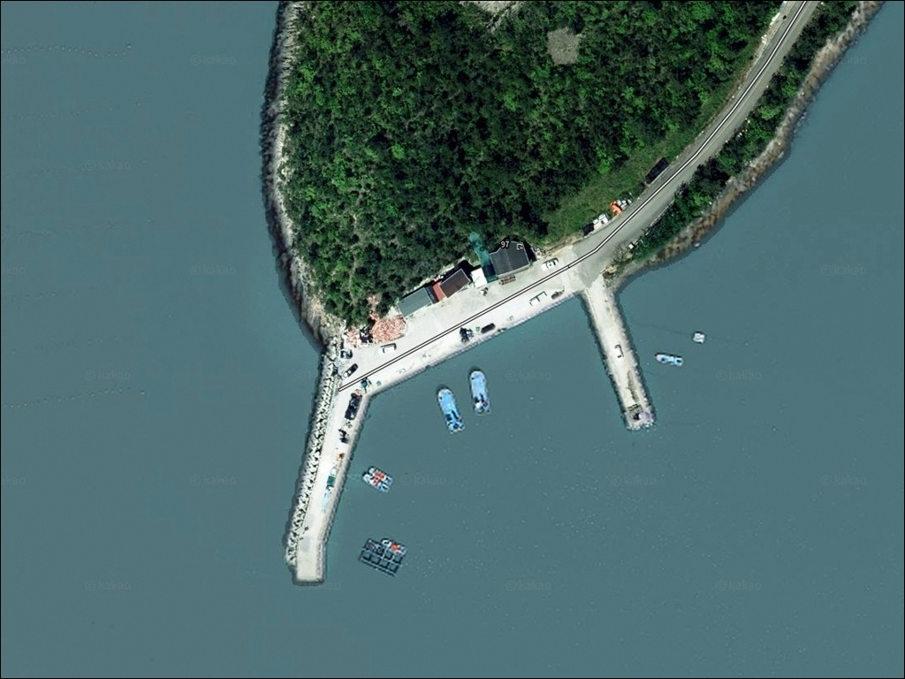
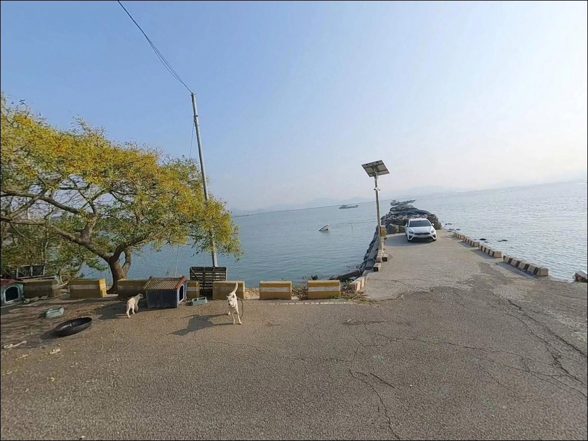
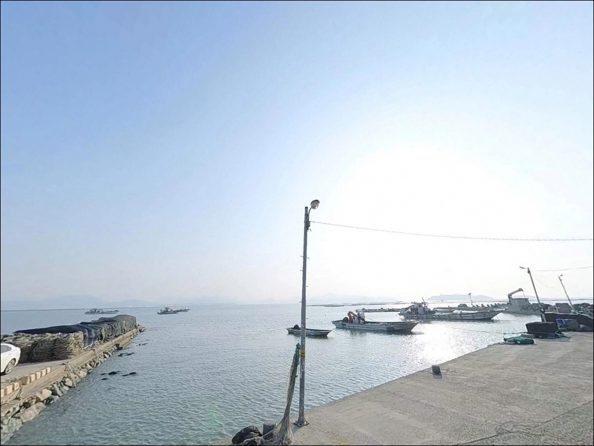
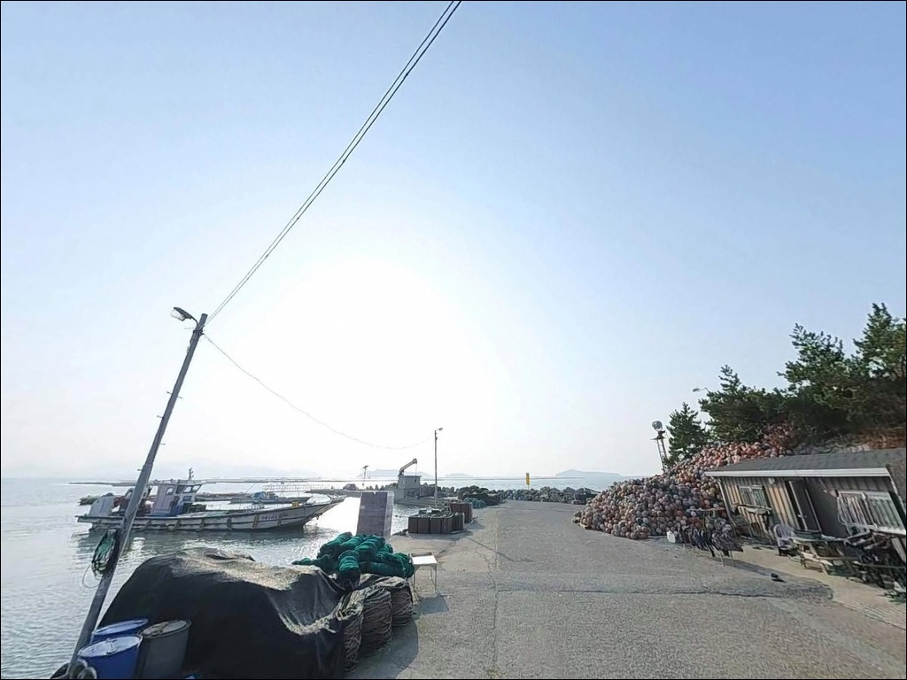
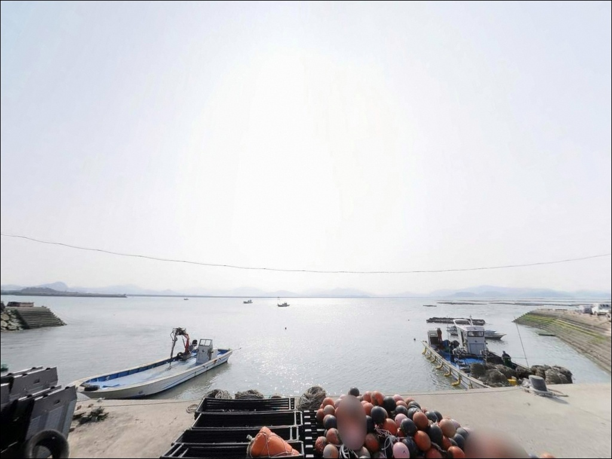
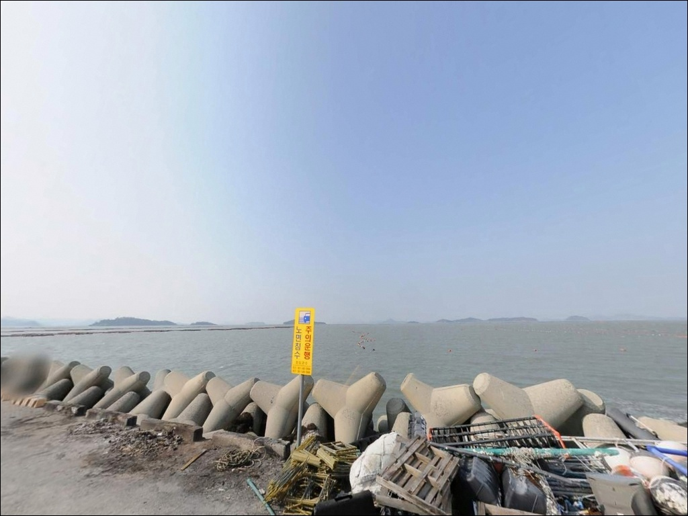
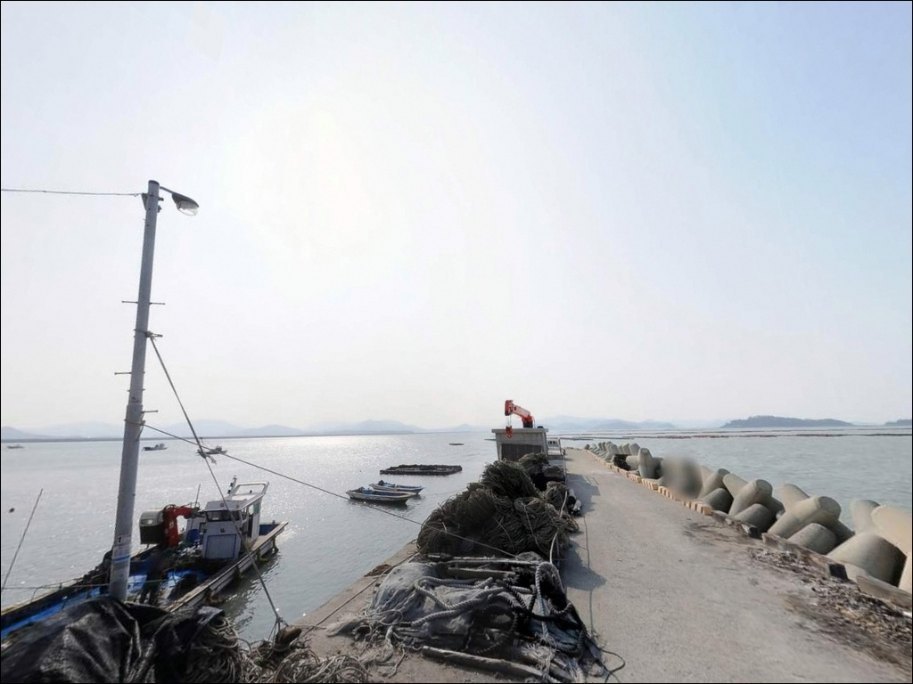
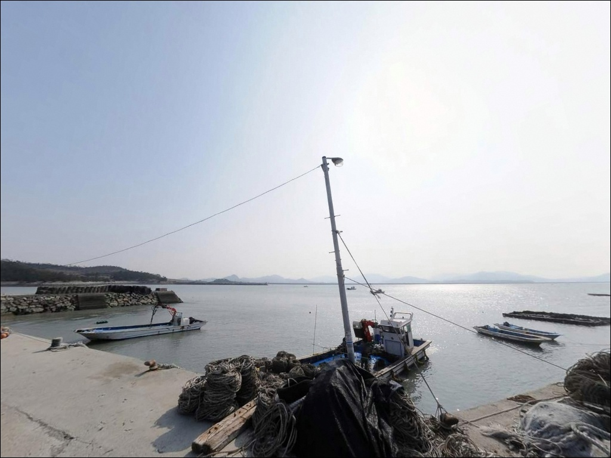
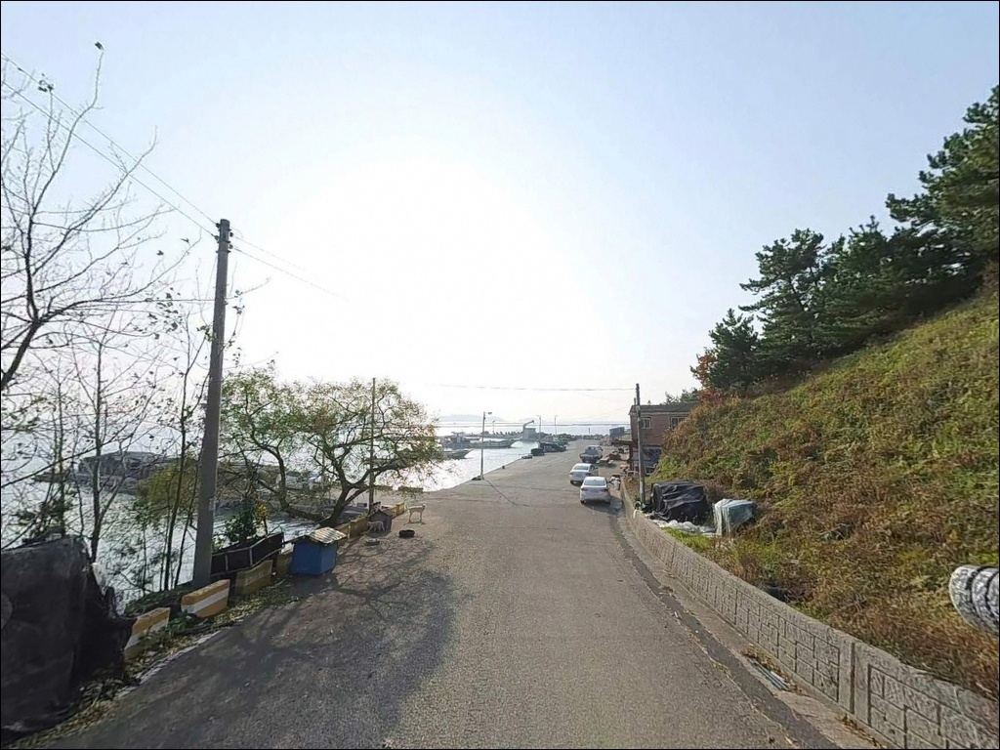

가늠목선착장, 진도 전남 진도군 고요한 수면을 바라보며 차박, 낚시를 즐기기 좋은 해안
이 페이지에는 광고(제휴 링크 포함)가 있으며, 광고 링크를 통해 구매하면 운영자가 판매 수익 또는 수수료를 받을 수 있습니다. 포인트 사진: 카카오맵 스카이뷰·로드뷰. 이 페이지의 지도·사진 이미지는 카카오맵의 실제 서비스 이미지와 다를 수 있습니다.


포인트 안내
가늠목선착장
전남 진도군 군내면 나리 433-72
명량해협 조류 영향권 포인트에서
물때 확인 없이 진입하면,
사리 전후 강한 조류에 채비가 밀려
컨트롤 자체가 불가능해집니다.
가늠목선착장은 국내에서 조류가 가장 빠른
명량해협 서쪽 확장부를 바라보는 자리로,
조류와 물때가 낚시 가능 여부를 결정하는 구조입니다.
이 글은 가늠목선착장의
진입 환경, 조류 조건, 낚시 방식별 공략 기준에 집중합니다.
조황 단정이나 시설 확정 정보는
이 글의 범위에 포함되지 않습니다.

1. 진입 동선과 포인트 접근성
가늠목선착장이 위치한 나리는
진도군 극북단에 해당하는 소규모 어촌 마을입니다.
진도대교 인근 녹진리에서
해안 소로를 따라 북서쪽으로
약 3~4km 이동하면 닿는 위치입니다.
마을 내부 진입로는 농어촌 소로 수준으로,
폭이 좁은 구간이 포함되어 있습니다.
대형 SUV나 캠핑 장비를 적재한 차량이라면
출발 전에 위성지도로 진입로를 미리 확인하는 것이
기본 준비입니다.
선착장 접안부 직전 공간은
소규모 공터 수준이어서
소형~중형 차량 기준 진입이 현실적입니다.
회차 공간도 넉넉하지 않으므로
후진 진출 여부도 미리 판단해 두는 편이 좋습니다.
선착장 주차는 접안부 옆 공터를 활용하는 방식이 일반적이며,
어선 접안 동선과 겹치지 않는 자리를
먼저 확인해야 합니다.
소형 마을 선착장 구조상
별도의 공식 주차장은 없는 편입니다.

2. 차박 환경과 야간 체류 여건
나리는 진도 극북단의 소규모 어촌 마을로
야간 차량 통행이 거의 없는 조용한 환경입니다.
민가와의 거리에 따라 프라이버시 수준이 달라지며,
선착장 직접 접안부 인근은
마을 생활 동선과 겹치는 구조여서
완전한 독립형 차박 환경은 기대하기 어렵습니다.
가로등 수가 많지 않은 소형 선착장 특성상
야간 개인 조명 장비는 필수입니다.
명량해협 방향으로 노출된 해안이어서
북서계절풍이 강한 가을~겨울에는
바람 영향을 직접 받는 구간이 생깁니다.
바람 방향과 세기는 출발 당일 아침
기상청 예보로 재확인하는 편이 좋습니다.
낚시 후 조용히 하룻밤 머무는 용도라면
소음과 통행 빈도 면에서 나쁘지 않지만,
주차 공간이 협소해
차박을 메인 목적으로 삼기에는
현장 공간 확인이 선행되어야 합니다.


3. 주변 편의시설 및 인프라 현황
가늠목선착장 반경 3km 이내에는
편의점이나 식당을 기대하기 어렵습니다.
나리는 소규모 어촌 마을 특성상
생활 인프라가 거의 없으므로,
식수·얼음·낚시 소품·연료는 출발 전 완비하는 것이
현실적인 준비 방식입니다.
녹진리 방향으로 차량 5~8분 거리에는
진도타워 인근 식당가와
편의점 등 기본 생활 인프라가 갖춰져 있습니다.
진도읍까지는 약 10km 거리이며
마트·주유소·약국 등을 이용할 수 있습니다.
부족한 소품이 있다면
이 동선을 출발 전에 먼저 활용하는 편이 효율적입니다.

4. 진입 전 반드시 챙겨야 할 준비사항
가늠목선착장 방문에서
가장 먼저 확인해야 할 것은 물때입니다.
명량해협은 국내에서 조류가 가장 빠른 해역으로,
사리 전후 본류 유속은 최대 11~12노트에 달합니다.
가늠목선착장 인근 해역도 이 영향권 안에 있어,
사리 전후에는 채비가 조류에 밀려
원하는 구간을 공략하는 것 자체가 어렵습니다.
바다타임에서 군내면 나리 기준 물때를 확인하고
조금 전후 또는 정조 타이밍을 노려
출발 시각을 맞추는 것이 기본 전략입니다.
명량해협 조류 영향권 포인트는
조금 전후 물때를 기준으로 낚시 가능 여부가 결정됩니다.
기상 변화도 미리 점검해야 합니다.
명량해협 일대는 조류와 바람이 맞물릴 때
파도가 빠르게 높아지는 구간입니다.
출조 당일 기상청 해상 특보를
다시 한번 확인한 뒤 진입 여부를 결정하는 편이 안전합니다.
조류가 강한 해역 특성상
여분 채비를 넉넉히 챙기는 것이 기본입니다.
마을 선착장이어서
어선 조업이 이루어지는 공간입니다.
어선 이동 동선과 어구에 접촉하지 않도록
자리를 잡는 것이 기본 매너이며,
야간에는 헤드랜턴과 구명조끼를
반드시 지참해야 합니다.

5. 낚시 포인트 선정 전 반드시 확인해야 할 지형 요소
가늠목선착장의 지형적 특징은
명량해협 서쪽 확장부에 위치한다는 점입니다.
해협을 빠져나온 조류가
나리 해안선 방향으로 퍼져나가는 구간에 해당하며,
선착장 전방으로 수심이 확보되는
물골 구조가 형성되어 있는 환경입니다.
선착장 끝단 기준으로 전방 수심은
상당히 확보되는 편이며,
조류 방향에 따라 입질 구간이 바뀌는 특성이 있습니다.
선착장 내측은 상대적으로 조류가 완화되어
찌낚시나 원투낚시에 유리한 구간을
형성하는 구조입니다.
군내면 북부 해안은
조간대에 뻘이 섞인 구간도 있어
선착장 인근 바닥 구조는
현장에서 직접 파악하는 것이 선행됩니다.
진입로가 좁은 소형 선착장에서는
출발 전 위성지도 확인이 방문 성패를 가릅니다.
가기 전에 군내면 일대 최신 조황은
꼭 검색해 보시기 바랍니다.


6. 포인트에 어울리는 낚시 스타일
이 포인트 지형 조건에 가장 잘 맞는 방식은
원투낚시입니다.
선착장 끝단에서 전방으로 조류가 흐르는 구간을
겨냥해 채비를 멀리 던지는 방식이 어울리며,
조금 전후 정조 타이밍에 집중하면
바닥층 어종을 탐색할 수 있는 조건이 갖춰집니다.
봉돌 무게는 조류 세기에 따라
올릴 여유분을 챙기는 편이 좋습니다.
찌낚시도 노려볼 만합니다.
선착장 내측의 상대적으로 조류가 완화되는 구간에서
감성돔 찌낚시를 시도해 볼 여지가 있습니다.
진도 해역은 남해 서부권 특성상
봄 산란기와 가을에 감성돔 활성도가
올라오는 시기가 형성되는 편입니다.
조류 흐름이 안정된 시간대를 먼저 확인한 뒤
찌를 내리는 것이 기본입니다.
루어낚시도 이 포인트 구조와 어울리는 스타일입니다.
조류 경계면에서 농어 회유가
기대해 볼 수 있는 지형 조건을 갖추고 있습니다.
다만 조류가 강한 구간에서는
채비 무게를 올려 바닥층에 밀착시키는 방식이
효과적이며, 정조 타이밍에 집중하는 편이 좋습니다.

7. 대안 포인트와 플랜 B 동선
가늠목선착장 조류가 너무 강하거나
주차 공간이 여의치 않을 때
가장 먼저 이동할 수 있는 대안은
군내방조제입니다.
선착장과 인접한 위치에서
더 넓은 구간의 낚시가 가능하며,
조류 조건이 비슷해
물때 판단을 그대로 적용할 수 있습니다.
진도대교 방향으로 이동하면
녹진항이 있습니다.
진도대교 바로 아래 위치해
진입과 편의시설 접근성이 안정적이며,
낚시 동선 파악도 수월한 편입니다.
가늠목선착장을 처음 탐색하는 경우라면
녹진항을 기점으로 삼고
가늠목선착장을 병행 탐색하는 동선이 효율적입니다.
군내면 권역에서 더 큰 규모의 포인트를 원한다면
벽파항으로 이동하는 방법도 있습니다.
진도 본도에서 규모 있는 항구로
낚시 접근성이 상대적으로 좋고,
사전 조황 검색도 용이한 곳입니다.
원투낚시나 루어 시즌에
가늠목선착장과 묶어서
돌아보기 좋은 대안 포인트입니다.

조류를 이해하면
가늠목선착장이 달라 보입니다
원투낚시나 찌낚시를 즐기는 낚시인에게
가늠목선착장은 탐색 가치가 있는 포인트입니다.
명량해협 조류 영향을 받는 지형 특성상
물때를 맞춘 진입이 전제되어야 하지만,
조류가 안정되는 타이밍에는
바닥층과 중층을 동시에 공략할 수 있는
조건을 갖춘 곳입니다.
반면 대형 차량이나 사리 물때에 방문하면
진입 또는 낚시 자체가 어려워지는 상황을
맞닥뜨릴 수 있습니다.
물때 확인, 진입로 사전 파악, 자급 준비,
이 세 가지를 갖추고 간다면
아직 잘 알려지지 않은
조용한 포인트를 먼저 발견할 수 있는 곳입니다.
편의시설 없는 소형 선착장에서
명량해협 조류 흐름 옆에 자리를 깔고
하룻밤 머무는 차박 여행자라면,
공간 확인과 어선 동선 배려만 갖춰두면
낚시와 차박을 조용히 병행하기 좋은 출조가 됩니다.